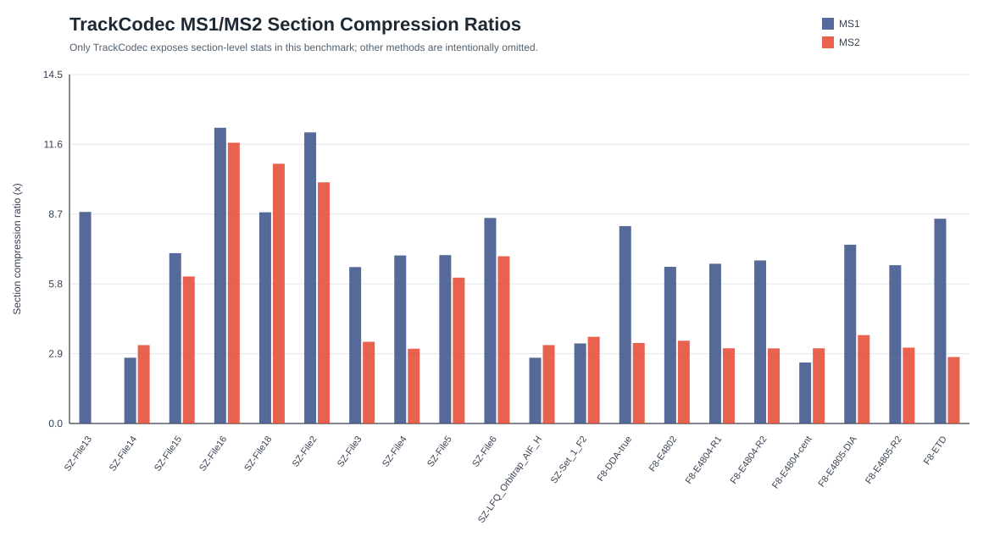
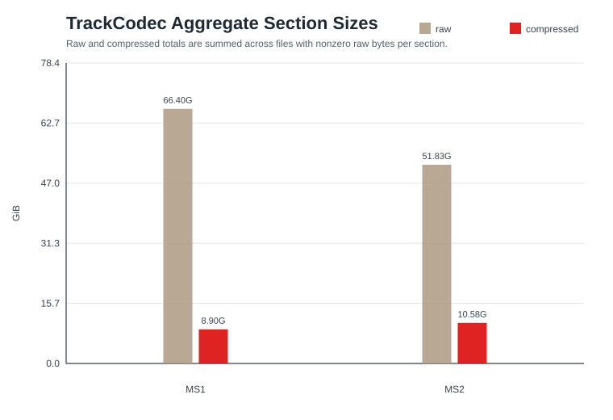

TrackCodec-only section summary generated from existing .stats.json files. Other benchmark methods are omitted because they do not expose comparable MS1/MS2 section stats in this run.
Files36
MS1 aggregate CR7.46x
MS2 aggregate CR4.90x
MS2 nonzero files35
Section Compression Ratios

Aggregate Section Sizes

Tables: trackcodec_ms1_ms2_section_benchmark.csv, trackcodec_ms1_ms2_section_aggregate.csv, and trackcodec_component_breakdown.csv.